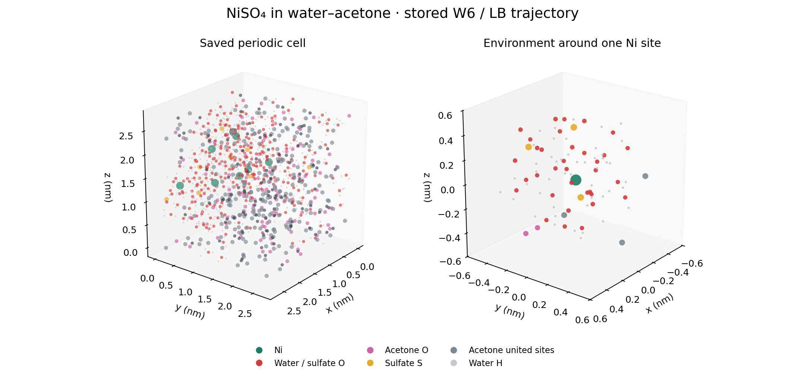
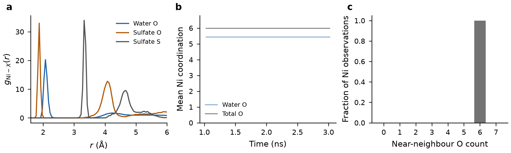
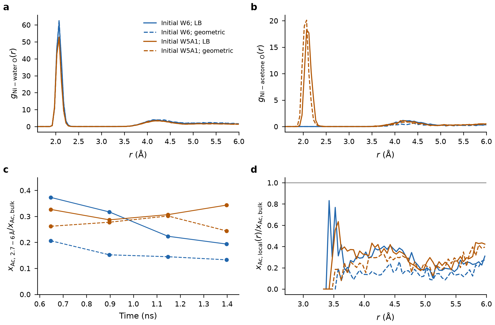

NiSO₄ in water–acetone: MD
Stored trajectories for hydrated nickel sulfate and water–acetone mixtures; radial distribution functions, coordination and force-field sensitivity.



Result scope
Each mixed control contains 256 H₂O, 110 acetone and 8 NiSO₄, with 0.5 ns equilibration and 1 ns production. Initial first-shell compositions persisted. The finite runs do not determine equilibrium populations, exchange rates or industrial SLE. Previous OVITO-rendered images have not been located.